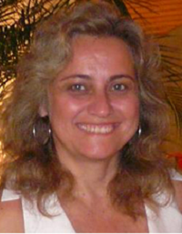
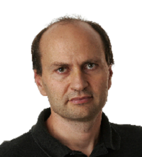
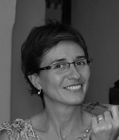
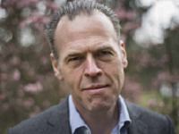
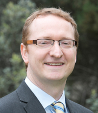

JOINT PANEL SESoS/WDES & ICGSE @ ICSE 2017
“Putting together Systems-of- Systems, Software Ecosystems and Distributed Software Development: what comes next?”
- Elisa Yumi Nakagawa, University of São Paulo (ICMC/USP), Brazil
- Flavio Oquendo, IRISA - University of South Brittany, France
- Paris Avgeriou, University of Groningen, The Netherlands
- Rodrigo Santos, Federal University of the State of Rio de Janeiro (UNIRIO), Brazil
- SesOs/WDES 2017 Chairs
- Anita Sarma, Oregon State University, USA
- Daniela Cruzes, SINTEF, Norway
- SesOs/WDES 2017 Chairs
- Sabrina Marczak, PUCRS, Brazil
- ICGSE 2017 General Chair
Software Ecosystems (SECO), Systems-of-Systems (SoS) and Distributed Software Development (DSD) are often discussed in parallel, but DSD is of a different nature than the other two. Why are they then dealt with together? For example, topics such as how large SoS (composed of independently managed and largely autonomous and evolving subsystems) operate and how these are developed by distributed teams, occur together. In addition, how the software supply network affects distributed, large SoS that are based on common technological platforms forming ecosystems. In some sense, this extends the notion of DevOps to SoS. In this panel, we expect to identity research questions at the intersection of the three areas that need to be integrated, an unpacking of the alignments and misalignments among the three areas fueling the research questions, and possible future directions especially in the intersection of the three areas.
Moderator

Cláudia Maria Lima Werner is a Full Professor in the Computer Science Department at COPPE/UFRJ (the Graduate School of Engineering of the Federal University of Rio de Janeiro, Brazil). Her areas of interest are Software Reuse, Software Engineering Education, Software Visualization and Ecosystems. She received her DSc. in Computer Science in 1992 from COPPE/UFRJ. She has over 150 technical papers published in international conferences and journals and 200 in Latin American conferences and journal. She is a member of the program committee for several International and Latin-American conferences, including the International Conference on Software Reuse, International Software Product Line Conference, Brazilian Software Engineering Symposium and the Brazilian Components, Architectures and Software Reuse Symposium, and workshops. She is a member of SBC (the Brazilian Society of Computer Science) and IEEE. She is currently the Academic Affairs Vice Director of COPPE/UFRJ and co-editor-in-chief of the Journal of Software Engineering Research and Development (JSERD, Springer).
Panelists

Audris Mockus worked at AT&T, then Lucent Bell Labs and Avaya Labs for 21 years. Now he is the Ericsson-Harlan D. Mills Chair professor in the Department of Electrical Engineering and Computer Science of the University of Tennessee. He specializes in the recovery, documentation, and analysis of digital remains left as traces of collective and individual activity. He would like to reconstruct and improve the reality from these projections via methods that contextualize, correct, and augment these digital traces, modeling techniques that present and affect the behavior of teams and individuals, and statistical models and optimization techniques that help understand the nature of individual and collective behavior. His work has improved the understanding of how teams of software engineers interact and how to measure their productivity. Dr. Mockus received a B.S. and an M.S. in Applied Mathematics from Moscow Institute of Physics and Technology in 1988. In 1991 he received an M.S. and in 1994 he received a Ph.D. in Statistics from Carnegie Mellon University.

Daniela Damian is a Professor of Software Engineering in the Department of Computer Science at the University of Victoria, where she leads the Software Engineering Global interAction research Lab (SEGAL). Her work focuses on socio-technical and organizational aspects in software development. She researches the communication, information flow and coordination among the diverse set of stakeholders beyond the technical dependencies found in software code. Software development is driven by many other dependencies that are not of technical nature, but most often guided by the project requirements or business needs. Large, distributed software projects, and specifically the emerging complex IT ecosystems rely on effective interactions among project stakeholders that include, beyond software developers, suppliers, customers and system end-users as well business partners. These complex interactions cross organizational, functional as well as national, cultural and socio-economic boundaries, making their study important but difficult. Her research employs a synergy of empirical methods, data mining and social network analysis techniques to understand these complex interactions as well as develop methods, processes and tools to improve the effectiveness of communication and coordination in large, distributed software projects. Daniela has served on the program committee boards of several software engineering conferences, was the Co-Chair for the Software Engineering in Society Track at ICSE 2015, the program co-chair for the First International Conference on Global Software Engineering (ICGSE06), and a guest editor of the IEEE Software Special Issue on Global Software Engineering (2006). She is currently serving on the editorial boards of Transactions on Software Engineering, the Journal of Requirements Engineering, and is the Requirements Engineering Area Editor for the Journal of Empirical Software Engineering, and the Human Aspects Area Editor for the Journal of Software and Systems.

Jan Bosch is professor of software engineering at Chalmers University Technology in Gothenburg, Sweden. He is director of the Software Center (www.software-center.se), a strategic partner-funded collaboration between 10 large European companies (including Ericsson, Volvo Cars, Volvo Trucks, Saab Defense, Jeppesen (Boeing) and Siemens) and five universities focused on software engineering excellence. Earlier, he worked as Vice President Engineering Process at Intuit Inc where he also led Intuit's Open Innovation efforts and headed the central mobile technologies team. Before Intuit, he was head of the Software and Application Technologies Laboratory at Nokia Research Center, Finland. Prior to joining Nokia, he headed the software engineering research group at the University of Groningen, The Netherlands. He received a MSc degree from the University of Twente, The Netherlands, and a PhD degree from Lund University, Sweden. His research activities include evidence-based development, software architecture, innovation experiment systems, compositional software engineering, software ecosystems, software product families and software variability management. He is the author of several books including "Design and Use of Software Architectures: Adopting and Evolving a Product Line Approach" published by Pearson Education (Addison-Wesley & ACM Press) and ÒSpeed, Data and Ecosystems: Excelling in a Software-Driven WorldÓ published by Taylor and Francis, editor of several books and volumes and author of a significant number of research articles. He is editor for Journal of Systems and Software as well as Science of Computer Programming, chaired several conferences as general and program chair, served on numerous program committees and organized countless workshops. In the startup space, Jan is chairman of the board of Fidesmo in Stockholm, Auqtus and, until recently, Remente, in Gothenburg, Sweden. He serves on the advisory board of Assia Inc. in Redwood City, CA, Peltarion AB in Stockholm and Burt AB in Gothenburg, Sweden. Jan also runs a boutique consulting firm, Boschonian AB, that offers its clients support around the implications of digitalization including the management of R&D and innovation. For more information see his website: www.janbosch.com.

Jon Whittle is Dean of the Faculty of IT at Monash University. His research interests lie at the intersection of software engineering and human-computer interaction (HCI). He is well known for his work on industrial adoption of model-driven engineering (MDE) as well as novel MDE techniques which he developed and applied at NASA. In HCI, he has led a number of multi-million pound interdisciplinary projects developing new IT technologies that promote social change, in areas such as digital health and sustainable living. He is currently investigating how to embed human values in software systems so they can be relied on to operate according to the values of its designers. Jon is currently an Associate Editor of the Software and Systems Modeling Journal and will be PC Co-Chair of ICSE 2019.